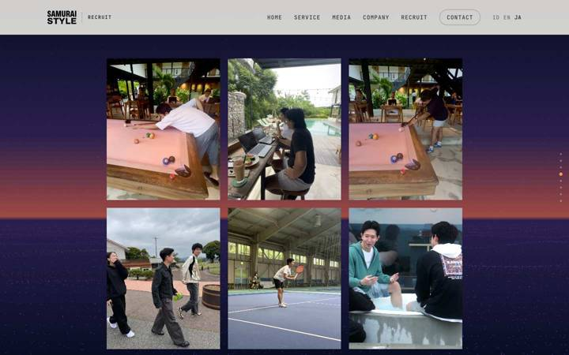
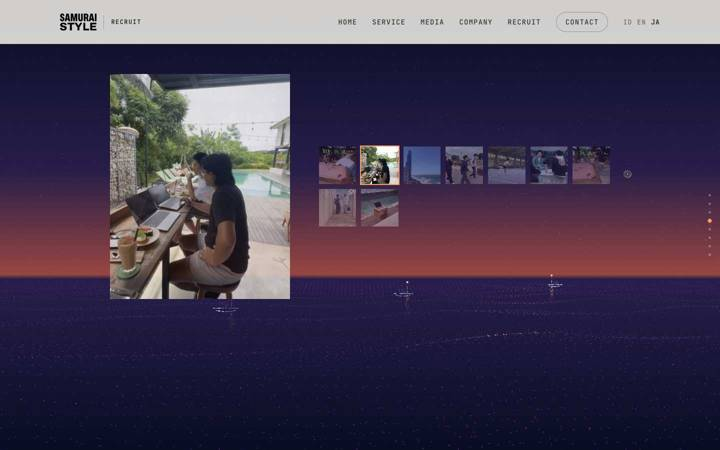
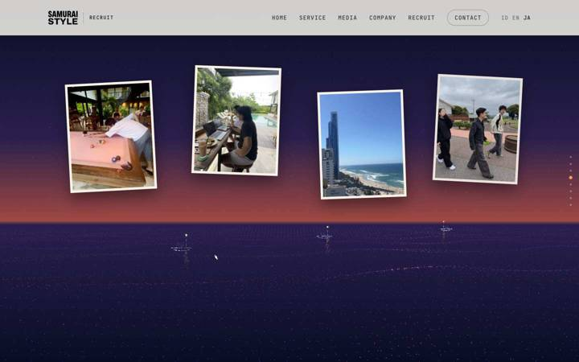
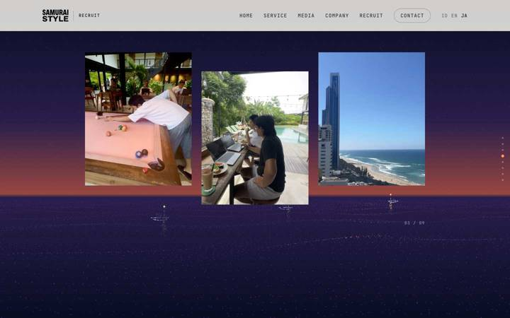

CORE VALUE（配置で「私たちは」と変える）
写真の加工はしない。私たちは は v3 のまま（文が左・写真が右）
土台は v3＋ほかのページと同じ見出しの作り。「楽しく働くことの意義」は4案とも vj の構成1（沖の花火が主役・文は左下・文字はほかの節と同じ大きさ）。 案a ↗ 案b ↗ 案c ↗ 案d ↗（節ごとに組み合わせ可）
画面を止めない・横に流さない。画面に入ったら動き、外に出たら止まって待つ。写真が増えても同じ作りで回る
3×2（スマホ 2×2）の格子。2.6秒ごとに1マスだけ、まだ出ていない写真にゆっくり入れ替わる

案b 1枚＋小さな一覧縦長の1枚が4秒ごとにゆっくり入れ替わり、少しずつ寄る。右に全部の写真の小さな一覧（触れるとその写真に）

案c ふわっと現れては消える決まった7か所（スマホ6）に、写真が少し傾いて現れ、6秒ほどで消えて次の写真へ。場所ごとに時間をずらす

案d 3つの窓でゆっくり寄る縦長の窓3つ（スマホ2）。窓の中で写真がゆっくり寄っていき（Ken Burns）、窓ごとに時間をずらして次の写真へ

写真の加工はしない。私たちは は v3 のまま（文が左・写真が右）
Fun の大きさを抑え、Free・Flat・Open・Optimization の名前と説明を読める大きさに